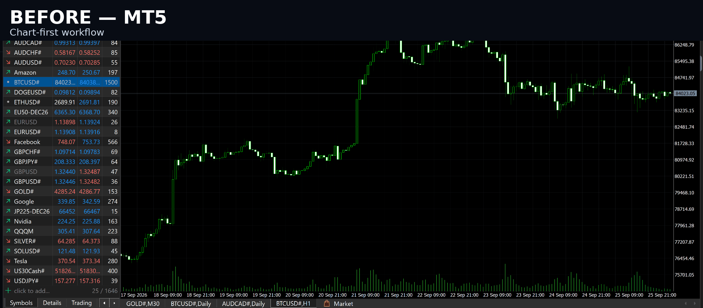
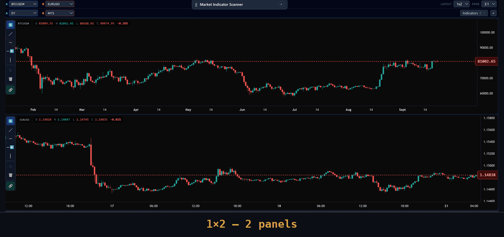
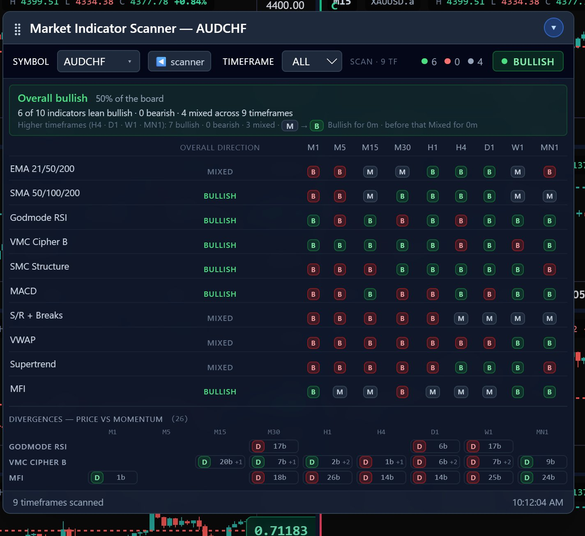
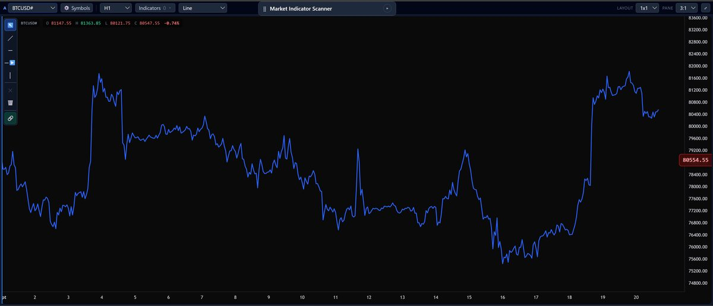
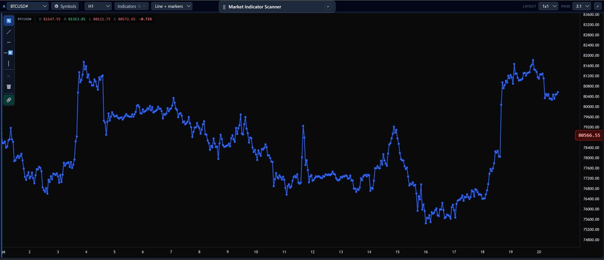
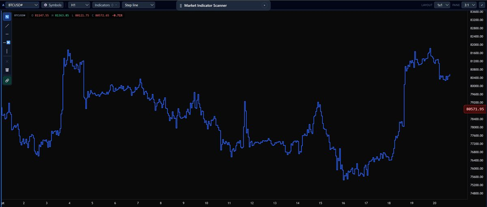
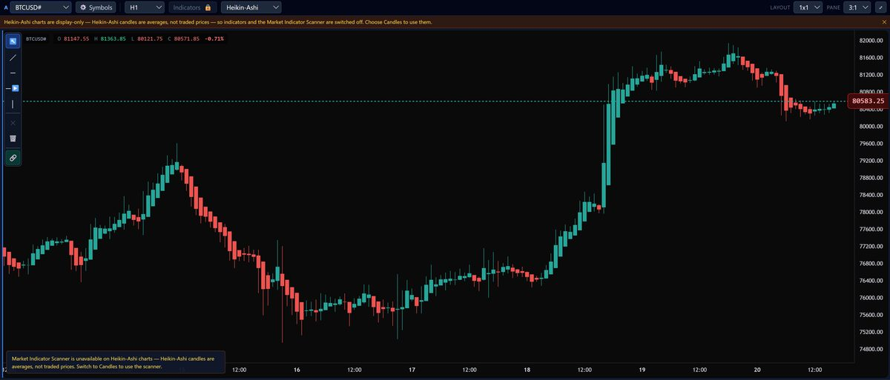
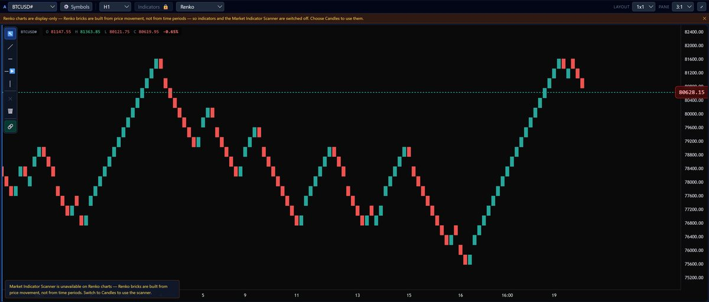
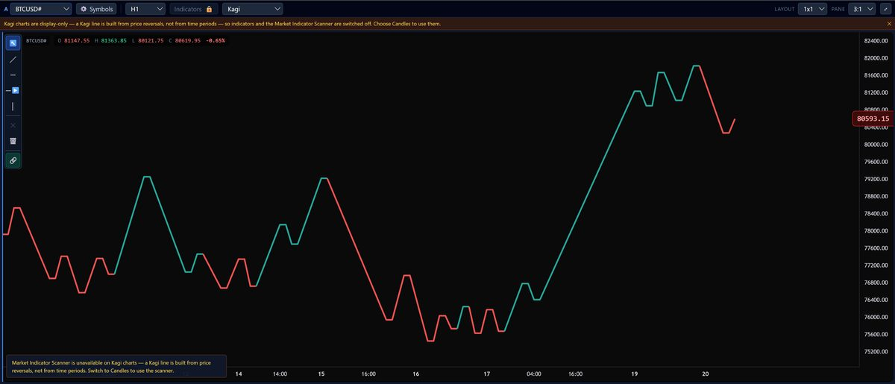
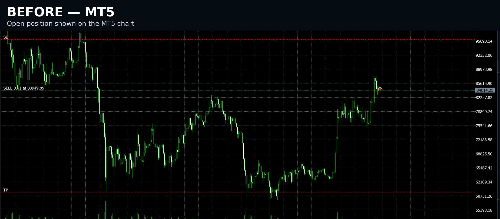

Keep the MT5 connection you already use. ACM adds the analysis, scanning and multi-timeframe workflow that MT5 leaves you to build yourself.
See the MT5 problemTry Pro for 30 days →Charts. Indicators. Symbols. Timeframes. They are all there — but the burden is still on you to open the right chart, check the right timeframe, and work out what deserves attention.
You can tile charts and load indicators natively — that part's fine. What's missing is anything that looks at your whole list of instruments and tells you which ones need attention. So you still open each chart yourself, on every timeframe you care about, one at a time.
Log in to your broker as usual. ACM finds the running terminal on its own.
It works out how your broker names each one, whatever the suffix.
Ten studies across nine timeframes reduce to one verdict per instrument: bullish, bearish, or mixed.

MT5 makes you manage separate chart windows. ACM puts the context into one workspace: from 1×1 to 4×4, with every panel able to use its own symbol and timeframe. See the bigger picture without losing the detail.
Start with a single chart or expand to a 4×4 board. Each panel can use its own instrument and timeframe, so you can compare markets without filling your desktop with separate MT5 windows.

Most market scanners give you a colored label and leave you to trust it. ACM shows the reasoning behind every verdict, at whatever depth you want to see.
The scanner panel runs ten classic technical studies across nine timeframes, for every instrument your plan covers, and reduces it to a single verdict: bullish, bearish, or mixed.
Instead of just "bullish," ACM tells you it's been bullish for two hours and fourteen minutes, and what it was before that. Divergences — early signs a move is losing steam — are tracked across every timeframe in the same grid.

From the all-timeframe view above, drill into a single timeframe — say M30 on BTCUSD — and every one of the ten indicators explains itself in a sentence, with its own verdict. Tap any row to expand it further: the golden cross, the exact squeeze percentage, when the divergence fired.
10 indicators feed the scanner's scored Bullish/Bearish/Mixed verdict 3 are context tools available on every chart, without a directional read — all 13 available to attach manually.
Step backward through price history and replay it forward, with your indicators recalculating candle by candle — no look-ahead, no repainting. The Market Indicator Scanner is paused and hidden during replay so it can never report live figures beside a historical chart.
For example, Pro+ can replay US30 M30, XAUUSD M15, DXY D1 and EURUSD H1 simultaneously, with one shared replay clock.
Every panel can be set to candles, line, or one of the specialist styles below. Candles, line, line+markers and step line all use real time-based prices, so the scanner and indicators work on them normally. Heikin-Ashi, Renko and Kagi rebuild the chart from averaged prices or price movement instead of time — genuinely useful for reading trend structure, but display-only, so the scanner switches off automatically on those three.






Plus standard candlestick charts on every plan. All plans include all 21 timeframes: M1, M2, M3, M4, M5, M6, M10, M12, M15, M20, M30, H1, H2, H3, H4, H6, H8, H12, D1, W1 and MN1.
Open a trade in MetaTrader 5 and it shows up right alongside your charts in ACM — entry price, take-profit and stop-loss, at a glance. How many symbols' worth of open positions you can see at once depends on your plan.

One broker calls it GOLD. Another calls it XAUUSD.a. A third has its own suffix entirely. ACM finds whichever MetaTrader 5 terminal is running and works out the right name at your broker automatically.
Same instrument, three different brokers:
GOLDXAUUSD.aXAUUSD#all resolve to Gold — tracked
The same copy of ACM works on a Dukascopy, an XM, or any other MT5 broker's demo or live account, with no configuration — because it reads the connection from whichever terminal is actually running on your machine, not a fixed install path.
Every plan connects to any instrument available through your MetaTrader 5 broker. All launch plans are one-time perpetual licenses.
Full Pro feature set. Your trial starts when you first activate ACM, has no recurring charge, and expires after 30 days. You may purchase any ACM plan after the trial expires.
Core charting and a focused analysis workflow.
More workspace and scanning capacity.
Full automated scanning, analysis and replay.
Maximum capacity for larger workflows.
Perpetual licenses are one-time purchases with no recurring payment. ACM requires MetaTrader 5 for its live market-data workflow.
ACM is a Windows desktop application. MetaTrader 5 must be installed and logged in to your broker for the live market-data workflow. ACM does not need your broker password separately and does not place trades.
Email support@acmscope.com for installation, licensing or product questions.
ACM is digital software delivered electronically. Perpetual license purchases are generally non-refundable.
Before purchasing, customers may use the optional 30-Day Pro Trial to evaluate ACM. Choosing not to use the trial does not create an automatic right to a refund.
Refunds may be considered where a genuine technical defect prevents ACM from functioning substantially as described and the issue cannot be resolved with reasonable technical support.
Refunds are not provided for change of mind, failure to use the trial, misunderstanding of features or plan limits, incompatibility with a customer's computer or MT5/broker setup, insufficient broker data or history, or dissatisfaction with trading results.
This policy does not affect any mandatory consumer rights applicable to your location.
ACM is digital software delivered electronically, so perpetual license purchases are generally non-refundable. The optional 30-Day Pro Trial is available for evaluation, but not using the trial does not create an automatic right to a refund. Refunds may be considered where a genuine technical defect prevents ACM from functioning substantially as described and cannot be resolved with reasonable technical support. Mandatory consumer rights applicable to your location remain unaffected.
On candles, line, line+markers and step line — yes, fully. Heikin-Ashi, Renko and Kagi are display-only chart types: they're built from averaged prices or price movement rather than real traded prices, so indicators and the scanner switch off automatically on those, regardless of your plan. Switch back to candles to use them again.
No. ACM never places a trade and never touches your account balance. It reads market data through your MetaTrader 5 terminal and shows you what the technical studies currently say — what you do with that is entirely up to you.
No. ACM doesn't tell you what to buy or sell, and it doesn't predict the future. It summarizes what a set of established technical studies currently show, on the markets you've already chosen to follow, and flags when that picture changes.
If your broker gives you MetaTrader 5, yes. ACM detects whichever MT5 terminal is running on your machine and automatically works out how your broker names each instrument, so the same install works unmodified across brokers.
A Windows PC with MetaTrader 5 installed and logged in to your broker. Installation is a normal setup wizard — no coding, no command line.
The trial is $9.99 for 30 days from first activation. There is no automatic renewal or recurring charge. After the trial expires, you may purchase any ACM plan.
No. The launch plans are one-time perpetual licenses with no recurring payment. The Pro 30-day trial is also a one-time purchase; it expires 30 days after first activation.
ACM loads up to 2,000 recent candles per chart panel. The amount of historical data available can also depend on the history MT5 has downloaded for that symbol and timeframe.
Thirty days of full Pro access for $9.99. No recurring charge. The trial expires after 30 days from first activation, and you may purchase any ACM plan afterward.
Start the trial